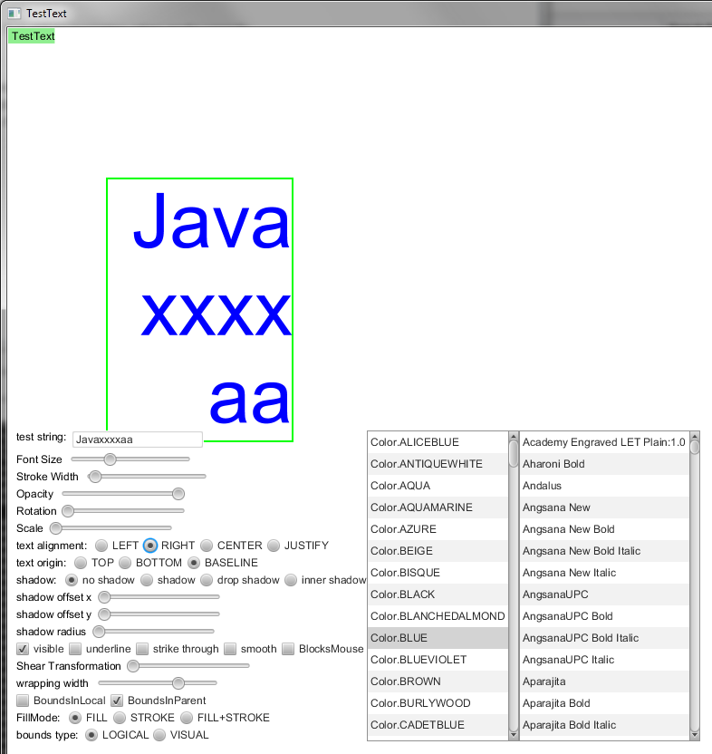

Text Test
This test verify Text attibutes/properties setters works correctly.
Test workflow:
1. how to use "text origin" radiobutton and expected behavior
- set font size approximately 50-70 pt
- set text origin to "baseline"
- set text origin to "bottom" - text should move up
- set text origin to "baseline"
- set text origin to "top" - text should move down
2. how to test "text alignment"
- insert additional characters into test string to make it's length 15-30 characters
- adjust "wrapping width" to make test text height 2-3 lines
- use "text alignment" radiobutton
Example:
